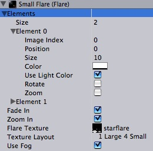
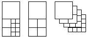
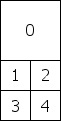
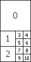
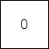
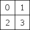
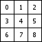
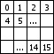

Previous
Previous
Flare objects are the source assets for lens flares. You choose a flare from the project folder for a lens flare in your scene - like you choose textures for your mesh objects.
Unity ships with a couple of pre-made flares in Standard Assets package. If you want to add one of these to your scene, Use a Lens Flare component.

The Flare asset inspector
Properties
| Property: | Function: |
|---|---|
| A list of images making up the flare. For a description, see Flare Element properties below. | |
| If enabled, the flare will fade up to full strength when it becomes visible and fade out when it doesn't. | |
| If enabled, the elements scale up when the flare becomes visible and scale down again when it doesn't. | |
| A texture containing images used by this flare. | |
| How the individual flare element images are laid out inside the flare texture.  | |
| If enabled, the flare will fade away with distance fog. This is used for small flares. |
Details
A flare consists of multiple elements, arranged along a line. One point of the line goes through the lens flare object in the scene, the other goes through the screen center. The elements are strung out on this line.
Flare Element Properties
Each element of a flare can be tweaked in a number of ways. Each index of the Elements array reveals the following properties:
| Property: | Function: |
|---|---|
| Which sub-image to use from the flare texture (see flare textures section below). | |
| The position of the element along the line going from the light position, through the screen center (0 = light, 1 = screen center) | |
| The size of the element | |
| Color tint of the element | |
| Pick up the color from a light source? | |
| If enabled, bottom of the image will always face the center of the screen, making the image spin as the flare moves around on the screen. | |
| Make the flare size dependent on brightness? |
Flare Textures
For performace reasons all elements of one flare share the same texture. This texture contains a collection of the different images that get combined. The Texture Layout defines how the images are laid out in the flare texture. The following layouts are available:
- 1 Large 4 Small
- Designed for large sun-style flares where you need one of the flare elements to have a higher fidelity than the others.

This is designed to be used with textures that are twice as high as they are wide. The numbers in the figure above are the elements' Image Index values. - 1 Large 2 Medium 8 small
- Designed for complex flares that require 1 high-definition, 2 medium & 8 small images.

This is used in the standard 50mm Zoom Flare where the two medium ones are the rainbow-colored circles. This is designed to be used with textures that are twice as high as they are wide. - 1 texture
- A single image.
 - 2x2 grid
- A simple 2x2 grid.
 - 3x3 grid
- A simple 3x3 grid.
 - 4x4 grid
- A simple 4x4 grid.

Hints
- If you use many different flares, try to pack them into one flare texture as that will render faster.